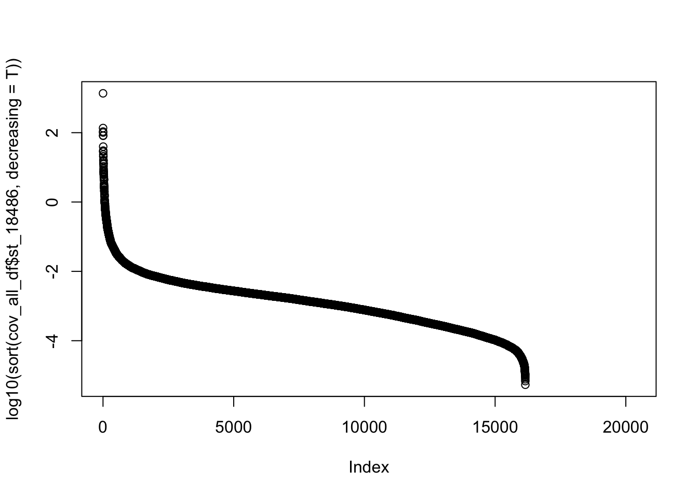

Data exploration of Net-4
Briana Mittleman
6/11/2018
Last updated: 2018-06-22
workflowr checks: (Click a bullet for more information)-
✔ R Markdown file: up-to-date
Great! Since the R Markdown file has been committed to the Git repository, you know the exact version of the code that produced these results.
-
✔ Environment: empty
Great job! The global environment was empty. Objects defined in the global environment can affect the analysis in your R Markdown file in unknown ways. For reproduciblity it’s best to always run the code in an empty environment.
-
✔ Seed:
set.seed(12345)The command
set.seed(12345)was run prior to running the code in the R Markdown file. Setting a seed ensures that any results that rely on randomness, e.g. subsampling or permutations, are reproducible. -
✔ Session information: recorded
Great job! Recording the operating system, R version, and package versions is critical for reproducibility.
-
Great! You are using Git for version control. Tracking code development and connecting the code version to the results is critical for reproducibility. The version displayed above was the version of the Git repository at the time these results were generated.✔ Repository version: eb85223
Note that you need to be careful to ensure that all relevant files for the analysis have been committed to Git prior to generating the results (you can usewflow_publishorwflow_git_commit). workflowr only checks the R Markdown file, but you know if there are other scripts or data files that it depends on. Below is the status of the Git repository when the results were generated:
Note that any generated files, e.g. HTML, png, CSS, etc., are not included in this status report because it is ok for generated content to have uncommitted changes.Ignored files: Ignored: .DS_Store Ignored: .RData Ignored: .Rhistory Ignored: .Rproj.user/ Ignored: data/.DS_Store Untracked files: Untracked: Ggsb_logo.r.pdf Untracked: Rplot.pdf Untracked: _workflowr.yml Untracked: analysis/filter_bam.Rmd Untracked: analysis/gencode.v19.annotation.proteincodinggene.saf Untracked: analysis/temp Untracked: analysis/top5_gen_wind200.bed Untracked: data/DaPars_APA_geuvadis.txt Untracked: data/Day7_cardiomyocytes_droNC_seq.bam Untracked: data/Day7_cardiomyocytes_droNC_seq.bam.bai Untracked: data/Day7_cardiomyocytes_drop_seq.bam Untracked: data/Day7_cardiomyocytes_drop_seq.bam.bai Untracked: data/LCL_3utr.txt Untracked: data/LCL_3utrAB.bed Untracked: data/LCL_3utrAB.neg.chr20.bed Untracked: data/LCL_3utrAB_pos.chr1.bed Untracked: data/LCL_3utrAB_pos.chr21.bed Untracked: data/NET3-18486.gene.coverage.bed Untracked: data/NET3-18486.gene.coverage.noSM.bed Untracked: data/NET3-18486.gene.coverage.nosn.nosno.bed Untracked: data/NET3-18486.gene.coverage.notopwind.bed Untracked: data/NET3-18486.tss.coverage.bed Untracked: data/NET3-18486_combined_Netpilot-sort.FC200.cov.bed Untracked: data/NET3-18486_combined_Netpilot-sort.FC200.cov.no0.bed Untracked: data/NET3-18486_combined_Netpilot-sort.exon.cov.txt Untracked: data/NET3-18505.gene.coverage.bed Untracked: data/NET3-18505_combined_Netpilot-sort.FC200.cov.no0.bed Untracked: data/NET3-18508_combined_Netpilot-sort.FC200.cov.no0.bed Untracked: data/NET3-19128_combined_Netpilot-sort.FC200.cov.no0.bed Untracked: data/NET3-19141_combined_Netpilot-sort.FC200.cov.no0.bed Untracked: data/NET3-19193_combined_Netpilot-sort.FC200.cov.no0.bed Untracked: data/NET3-19239_combined_Netpilot-sort.FC200.cov.no0.bed Untracked: data/NET3-19257_combined_Netpilot-sort.FC200.cov.no0.bed Untracked: data/RNAseqGeuvadis_STAR_18486.coverage.bed Untracked: data/RNAseqGeuvadis_STAR_18486.gene.coverage.bed Untracked: data/RefSeqGenes.bed Untracked: data/SRR1575922-sort.bam Untracked: data/SRR1575922-sort.bam.bai Untracked: data/SwitchGear_TSS.bed Untracked: data/UMI_18486_dep_stat.txt Untracked: data/UMI_18486_dep_stat_tab.txt Untracked: data/UMI_18508_dep_stat.txt Untracked: data/UMI_18508_nondep_stat.txt Untracked: data/UMI_19238_dep_stat.txt Untracked: data/UMI_Net3_18486_dedupstat.txt Untracked: data/UMI_Net3_18486_stat.txt Untracked: data/UMI_Net3_18505_dedupstat.txt Untracked: data/UMI_Net3_18505_stat.txt Untracked: data/UMI_Net3_18508_dedupstat.txt Untracked: data/UMI_Net3_18508_stat.txt Untracked: data/UMI_Net3_19128_dedupstat.txt Untracked: data/UMI_Net3_19128_stat.txt Untracked: data/UMI_Net3_19141_dedupstat.txt Untracked: data/UMI_Net3_19141_stat.txt Untracked: data/UMI_Net3_19193_dedupstat.txt Untracked: data/UMI_Net3_19193_stat.txt Untracked: data/UMI_Net3_19239_dedupstat.txt Untracked: data/UMI_Net3_19239_stat.txt Untracked: data/UMI_Net3_19257_dedupstat.txt Untracked: data/UMI_Net3_19257_stat.txt Untracked: data/UMI_mayer_stat.txt Untracked: data/YG-SP-NET1-18486-dep-2017-10-13_S4_R1_001-sort.dedup.cov.bed Untracked: data/YG-SP-NET3-18486_combined_Netpilot-sort.cov.AC093901.bed Untracked: data/YG-SP-NET3-18486_combined_Netpilot-sort.cov.BTRC.bed Untracked: data/YG-SP-NET3-18486_combined_Netpilot-sort.cov.RNU5B.bed Untracked: data/YG-SP-NET3-18486_combined_Netpilot-sort.cov.WDR74.bed Untracked: data/YG-SP-NET3-18486_combined_Netpilot-sort.cov.chr2.bed Untracked: data/YG-SP-NET3-18486_combined_Netpilot-sort.cov.insig2.bed Untracked: data/YG-SP-NET3-18486_combined_Netpilot-sort.cov.ppef2.bed Untracked: data/YG-SP-NET3-18486_combined_Netpilot-sort.cov.rnu259p.bed Untracked: data/YG-SP-NET3-18486_combined_Netpilot-sort.dedup.cov.insig2.bed Untracked: data/all_RNAmetrics.picard.none.csv Untracked: data/all_files.APA500.coverage.bed Untracked: data/all_files_coverage.bed Untracked: data/all_strand_genecounts_18486.txt Untracked: data/bam_files_chr/ Untracked: data/blcl.hg38.sorted.bam Untracked: data/blcl.hg38.sorted.bam.bai Untracked: data/cell_growth_3.21.18.csv Untracked: data/clip_18486_dep.txt Untracked: data/clusters.bed Untracked: data/clusters.hg38 Untracked: data/clusters.hg38.3utr.neg.bed Untracked: data/clusters.hg38.3utr.pos.bed Untracked: data/clusters.hg38.bed Untracked: data/dedup_18486_mapqual.txt Untracked: data/drop7_cardio_3utr.txt Untracked: data/drop7_cardio_3utrAB.neg.chr21.bed Untracked: data/drop7_cardio_3utrAB.pos.chr21.bed Untracked: data/ensembl2refseq.txt Untracked: data/eqtl_fullgene/ Untracked: data/eqtl_genes_effectsize.txt Untracked: data/eqtl_output.cis.txt Untracked: data/eqtl_output.txt Untracked: data/eqtl_strand_spec/ Untracked: data/exon_cov/ Untracked: data/fc_genecov/ Untracked: data/gencode.v19.annotation.distfilteredgenes.bed Untracked: data/gencode.v19.annotation.egqtlfilter.bed Untracked: data/gencode.v19.annotation.eqtlfilter.bed Untracked: data/gencov_18486.bed Untracked: data/gene_cov_count/ Untracked: data/gene_coverage_18486_dedup_hist.txt Untracked: data/gene_coverage_18486_hist.txt Untracked: data/gene_coverage_18508_dep.txt Untracked: data/gene_coverage_18508_dep_hist.txt Untracked: data/gene_coverage_18508_nondep_hist.txt Untracked: data/gene_coverage_19238_dep_hist.txt Untracked: data/gene_coverage_mayer_SRR1575922_hist.txt Untracked: data/gene_dedup_cov_count/ Untracked: data/genotypes.rs7144811.txt Untracked: data/growth_curve_3.16.csv Untracked: data/hES.hg38.sorted.bam Untracked: data/hES.hg38.sorted.bam.bai Untracked: data/hg19.GM72.CTCF Untracked: data/hg19.ref.genes.bed Untracked: data/insig2sec.txt Untracked: data/mapped_18486_dep.txt Untracked: data/mapped_18486_dep_max.txt Untracked: data/mapped_18508_dep.txt Untracked: data/mapped_19238_dep.txt Untracked: data/mapped_mayer.txt Untracked: data/mapped_qual_18486.txt Untracked: data/mapped_qual_18505.txt Untracked: data/mapped_qual_18508.txt Untracked: data/mapped_qual_19128.txt Untracked: data/mapped_qual_19141.txt Untracked: data/mapped_qual_19193.txt Untracked: data/mapped_qual_19239.txt Untracked: data/mapped_qual_19257.txt Untracked: data/matrix_expression.txt Untracked: data/matrix_genotypes.csv Untracked: data/matrix_genotypes.txt Untracked: data/merged_Net1.bam Untracked: data/merged_Net1.bam.bai Untracked: data/meta_info_coverage.bed Untracked: data/names_geno.txt Untracked: data/net-3-readmap/ Untracked: data/net1_18486_dep_dedup.bed Untracked: data/net1_18486_dep_dedup_chr.bed Untracked: data/net4_readcounts.xlsx Untracked: data/net_pilot_eqtl_expression.bed Untracked: data/net_pilot_eqtl_genotypes.vcf Untracked: data/netcomb_intronicbases.csv Untracked: data/opp_strand_genecounts_18486.txt Untracked: data/opp_strand_genecounts_18505.txt Untracked: data/opp_strand_genecounts_filt_18486.txt Untracked: data/perc_alive_3.16.csv Untracked: data/prom_coverage/ Untracked: data/qual_18486_dep.txt Untracked: data/qual_18508_dep.txt Untracked: data/qual_19238_dep.txt Untracked: data/qual_mayer.txt Untracked: data/refseq_250up.bed Untracked: data/run_lm_APA.txt Untracked: data/same_strand_genecounts_18486.txt Untracked: data/same_strand_genecounts_18505.txt Untracked: data/same_strand_genecounts_filt_18486.txt Untracked: data/sort_dedup_3prime_chr2_no0.18486.txt Untracked: data/sort_dedup_chr2_no0_18486.txt Untracked: data/test.txt Untracked: data/three_prime_utr.bed Untracked: data/top5_exonlist.txt Untracked: data/top5_exonlist_18486_fiveprime_cov.txt Untracked: data/top5_exonlist_18486_fiveprime_cov2.txt Untracked: data/top5_exonlist_18486_fiveprime_cov2_filter.txt Untracked: data/top5_exonlist_18486_threeprime_cov.txt Untracked: data/top5_exonlist_18486_threeprime_cov2.txt Untracked: data/top5_exonlist_18486_threeprime_cov2_filter.txt Untracked: data/top5_gen_wind200.bed Untracked: data/top5_gen_wind200.tab.bed Untracked: data/uniq_genes/ Untracked: data/windows_200/ Untracked: docs/temp Untracked: docs/top5_gen_wind200.bed Untracked: output/Rs7144811_apa_usage.pdf Untracked: output/picard.accrossgenebodies.netpilot.csv Unstaged changes: Modified: analysis/APA_qtl_RNAseq.Rmd Modified: analysis/LCL_growth.Rmd Modified: analysis/Net_3_explore.Rmd Modified: analysis/Reads_per_pas.Rmd Modified: analysis/UTR_coverage.Rmd Modified: analysis/_site.yml Modified: analysis/about.Rmd Modified: analysis/bin_windows.Rmd Modified: analysis/check_bamid.Rmd Deleted: analysis/chunks.R Modified: analysis/conda.environment.Rmd Modified: analysis/config.snake.setup.Rmd Modified: analysis/create_blacklist.Rmd Modified: analysis/data_for_ggplot.Rmd Modified: analysis/eqtl_bystrand.Rmd Modified: analysis/explore_umi_usage.Rmd Modified: analysis/extend_APA_qtl.Rmd Modified: analysis/gviz_plots.Rmd Modified: analysis/initial.data.exploration.Rmd Modified: analysis/license.Rmd Modified: analysis/map_stats_from_bam.Rmd Modified: analysis/reads_in_genes.Rmd Modified: analysis/recreate_mayer_figs.Rmd Modified: analysis/strand_spec.Rmd Modified: analysis/test-analysis.Rmd Modified: analysis/three_prime_UTR.Rmd Modified: analysis/update_snakefile.Rmd Modified: analysis/use_deeptools.Rmd Modified: analysis/visualize_genomefeatures.Rmd
Expand here to see past versions:
| File | Version | Author | Date | Message |
|---|---|---|---|---|
| Rmd | eb85223 | Briana Mittleman | 2018-06-22 | genic bases |
| html | f9622a0 | Briana Mittleman | 2018-06-22 | Build site. |
| Rmd | 0201bd8 | Briana Mittleman | 2018-06-22 | change filter cuttoff |
| html | 9787ad5 | Briana Mittleman | 2018-06-22 | Build site. |
| Rmd | 4e3c679 | Briana Mittleman | 2018-06-22 | add percent coverage and correlatin |
| html | 363ea13 | Briana Mittleman | 2018-06-22 | Build site. |
| Rmd | 97a0c53 | Briana Mittleman | 2018-06-22 | wflow_publish(c(“analysis/index.Rmd”, “analysis/net-4-explore.Rmd”)) |
The goal of this analysis is to explore the second batch of pilot netseq data (net4) with the 3 lanes of the original line. This data has been run on 3 lanes.
Net4 lines * 19238
* 19223
* 18497
* 19209
* 18500
* 18870
* 19225
* 18853
Feature counts on protein coding genes
I want to use feature counts to summarize how many counds we have in each protien coding gene. There are 20,347 genes in the annotation file.
Make an SAF file instead: Gene id, Chr, Start, End, Strand from the gencode.v19.annotation.proteincodinggene.bed
awk 'BEGIN {print "GeneID" "\t" "Chr" "\t" "Start" "\t" "End" "\t" "Strand"} {print $4 "\t" $1 "\t" $2 "\t" $3 "\t" $6}' gencode.v19.annotation.proteincodinggene.bed >gencode.v19.annotation.proteincodinggene.saf
fc_gene.sh
#!/bin/bash
#SBATCH --job-name=FC_genes
#SBATCH --time=8:00:00
#SBATCH --partition=gilad
#SBATCH --output=fc_gene.out
#SBATCH --error=fc_gene.err
#SBATCH --mem=20G
#SBATCH --mail-type=END
module load Anaconda3
source activate net-seq
#input is a bam file
sample=$1
describer=$(echo ${sample} | sed -e 's/.*\YG-SP-//' | sed -e "s/_combined_Netpilot-sort.bam$//")
featureCounts -T 5 -a /project2/gilad/briana/genome_anotation_data/gencode.v19.annotation.proteincodinggene.saf -F 'SAF' -g 'GeneID' -o /project2/gilad/briana/Net-seq-pilot/data/fc_genecov/genecov.${describer}.txt $1test on: /project2/gilad/briana/Net-seq-pilot/data/sort/YG-SP-NET3-19257_combined_Netpilot-sort.bam
Create a wrapper:
#!/bin/bash
#SBATCH --job-name=w_fcgenes
#SBATCH --time=8:00:00
#SBATCH --output=w_fcgenes.out
#SBATCH --error=w_fcgenes.err
#SBATCH --partition=gilad
#SBATCH --mem=8G
#SBATCH --mail-type=END
for i in $(ls /project2/gilad/briana/Net-seq-pilot/data/sort/*combined_Netpilot-sort.bam); do
sbatch fc_gene.sh $i
done
Genes with coverage per line
At this point 8 samples have over 100mil mapped reads. They are 18497, 18508, 18853, 18870, 19128, 19193, 19209 and 19239. We are waiting for more reads for 19225 and 18500. Unfortunately maping is low for 19223, but I have not diagnosed the problem yet.
Load libraries:
library(workflowr)Loading required package: rmarkdownThis is workflowr version 1.0.1
Run ?workflowr for help getting startedlibrary(dplyr)Warning: package 'dplyr' was built under R version 3.4.4
Attaching package: 'dplyr'The following objects are masked from 'package:stats':
filter, lagThe following objects are masked from 'package:base':
intersect, setdiff, setequal, unionlibrary(ggplot2)
library(tidyr)
library(reshape2)Warning: package 'reshape2' was built under R version 3.4.3
Attaching package: 'reshape2'The following object is masked from 'package:tidyr':
smithslibrary(edgeR)Warning: package 'edgeR' was built under R version 3.4.3Loading required package: limmaWarning: package 'limma' was built under R version 3.4.3Load data:
cov_18486=read.table("../data/fc_genecov/genecov.NET3-18486.txt", header=TRUE)
cov_18497=read.table("../data/fc_genecov/genecov.NET3-18497.txt", header=TRUE)
cov_18500=read.table("../data/fc_genecov/genecov.NET3-18500.txt", header=TRUE)
cov_18505=read.table("../data/fc_genecov/genecov.NET3-18505.txt", header=TRUE)
cov_18508=read.table("../data/fc_genecov/genecov.NET3-18508.txt", header=TRUE)
cov_18853=read.table("../data/fc_genecov/genecov.NET3-18853.txt", header=TRUE)
cov_18870=read.table("../data/fc_genecov/genecov.NET3-18870.txt", header=TRUE)
cov_19128=read.table("../data/fc_genecov/genecov.NET3-19128.txt", header=TRUE)
cov_19141=read.table("../data/fc_genecov/genecov.NET3-19141.txt", header=TRUE)
cov_19193=read.table("../data/fc_genecov/genecov.NET3-19193.txt", header=TRUE)
cov_19209=read.table("../data/fc_genecov/genecov.NET3-19209.txt", header=TRUE)
cov_19223=read.table("../data/fc_genecov/genecov.NET3-19223.txt", header=TRUE)
cov_19225=read.table("../data/fc_genecov/genecov.NET3-19225.txt", header=TRUE)
cov_19238=read.table("../data/fc_genecov/genecov.NET3-19238.txt", header=TRUE)
cov_19239=read.table("../data/fc_genecov/genecov.NET3-19239.txt", header=TRUE)
cov_19257=read.table("../data/fc_genecov/genecov.NET3-19257.txt", header=TRUE)Process data
gene_length=cov_18486$End- cov_18486$StartStandardize by gene length
cov_18486=cov_18486 %>% mutate(st_18486=X.project2.gilad.briana.Net.seq.pilot.data.sort.YG.SP.NET3.18486_combined_Netpilot.sort.bam/gene_length)Warning: package 'bindrcpp' was built under R version 3.4.4cov_18497=cov_18497 %>% mutate(st_18497=X.project2.gilad.briana.Net.seq.pilot.data.sort.YG.SP.NET3.18497_combined_Netpilot.sort.bam/gene_length)
cov_18500=cov_18500 %>% mutate(st_18500=X.project2.gilad.briana.Net.seq.pilot.data.sort.YG.SP.NET3.18500_combined_Netpilot.sort.bam/gene_length)
cov_18505=cov_18505 %>% mutate(st_18505=X.project2.gilad.briana.Net.seq.pilot.data.sort.YG.SP.NET3.18505_combined_Netpilot.sort.bam/gene_length)
cov_18508=cov_18508 %>% mutate(st_18508=X.project2.gilad.briana.Net.seq.pilot.data.sort.YG.SP.NET3.18508_combined_Netpilot.sort.bam/gene_length)
cov_18853=cov_18853 %>% mutate(st_18853=X.project2.gilad.briana.Net.seq.pilot.data.sort.YG.SP.NET3.18853_combined_Netpilot.sort.bam/gene_length)
cov_18870=cov_18870 %>% mutate(st_18870=X.project2.gilad.briana.Net.seq.pilot.data.sort.YG.SP.NET3.18870_combined_Netpilot.sort.bam/gene_length)
cov_19128=cov_19128 %>% mutate(st_19128=X.project2.gilad.briana.Net.seq.pilot.data.sort.YG.SP.NET3.19128_combined_Netpilot.sort.bam/gene_length)
cov_19141=cov_19141 %>% mutate(st_19141=X.project2.gilad.briana.Net.seq.pilot.data.sort.YG.SP.NET3.19141_combined_Netpilot.sort.bam/gene_length)
cov_19193=cov_19193 %>% mutate(st_19193=X.project2.gilad.briana.Net.seq.pilot.data.sort.YG.SP.NET3.19193_combined_Netpilot.sort.bam/gene_length)
cov_19209=cov_19209 %>% mutate(st_19209=X.project2.gilad.briana.Net.seq.pilot.data.sort.YG.SP.NET3.19209_combined_Netpilot.sort.bam/gene_length)
cov_19223=cov_19223 %>% mutate(st_19223=X.project2.gilad.briana.Net.seq.pilot.data.sort.YG.SP.NET3.19223_combined_Netpilot.sort.bam/gene_length)
cov_19225=cov_19225 %>% mutate(st_19225=X.project2.gilad.briana.Net.seq.pilot.data.sort.YG.SP.NET3.19225_combined_Netpilot.sort.bam/gene_length)
cov_19238=cov_19238 %>% mutate(st_19238=X.project2.gilad.briana.Net.seq.pilot.data.sort.YG.SP.NET3.19238_combined_Netpilot.sort.bam/gene_length)
cov_19239=cov_19239 %>% mutate(st_19239=X.project2.gilad.briana.Net.seq.pilot.data.sort.YG.SP.NET3.19239_combined_Netpilot.sort.bam/gene_length)
cov_19257=cov_19257 %>% mutate(st_19257=X.project2.gilad.briana.Net.seq.pilot.data.sort.YG.SP.NET3.19257_combined_Netpilot.sort.bam/gene_length)Join these on the gene name:
names=c("GeneID", "st_18486", "st_18497", "st_18500", "st_18505", "st_18508", "st_18853", "st_18870", "st_19128", "st_19141", "st_19193", "st_19209", "st_19223", "st_19225", "st_19238", "st_19239", "st_19257")
cov_all_df=data.frame(cov_18486$Geneid,cov_18486$st_18486, cov_18497$st_18497, cov_18500$st_18500, cov_18505$st_18505, cov_18508$st_18508, cov_18853$st_18853, cov_18870$st_18870, cov_19128$st_19128, cov_19141$st_19141, cov_19193$st_19193, cov_19209$st_19209, cov_19223$st_19223, cov_19225$st_19225, cov_19238$st_19238, cov_19239$st_19239, cov_19257$st_19257)
colnames(cov_all_df)= namesGenes with coverage
genes_detected=function(col, num){
#takes incov_all_dfl col which corresponds to one library
tot_genes=nrow(cov_all_df)
exp_genes=sum(col >num)
return(exp_genes/tot_genes)
}
detected_genes0=c(genes_detected(cov_all_df$st_18486, 0), genes_detected(cov_all_df$st_18497,0), genes_detected(cov_all_df$st_18500,0), genes_detected(cov_all_df$st_18505,0), genes_detected(cov_all_df$st_18508,0), genes_detected(cov_all_df$st_18853,0), genes_detected(cov_all_df$st_18870,0), genes_detected(cov_all_df$st_19128,0), genes_detected(cov_all_df$st_19141,0), genes_detected(cov_all_df$st_19193,0), genes_detected(cov_all_df$st_19209,0), genes_detected(cov_all_df$st_19223,0), genes_detected(cov_all_df$st_19225,0), genes_detected(cov_all_df$st_19238,0), genes_detected(cov_all_df$st_19239,0), genes_detected(cov_all_df$st_19257,0))
names(detected_genes0)=c("18486", "18497", "18500", "18505", "18508", "18853", "18870", "19128", "19141", "19193", "19209", "19223", "19225", "19238", "19239", "19257")
barplot(detected_genes0, ylim = c(0,1), main="Net-seq Genes detected greater than 0 standardized reads", ylab="Proportion non zero genes", xlab="Library", col = 'Blue')
abline(h=mean(detected_genes0))Expand here to see past versions of unnamed-chunk-9-1.png:
| Version | Author | Date |
|---|---|---|
| 9787ad5 | Briana Mittleman | 2018-06-22 |
0 is not the most informative detection rate because it could be due to noise. I need to look at the distribution to pick a better cuttoff.
plot(log10(sort(cov_all_df$st_18486, decreasing = T)))
Expand here to see past versions of unnamed-chunk-10-1.png:
| Version | Author | Date |
|---|---|---|
| f9622a0 | Briana Mittleman | 2018-06-22 |
| 9787ad5 | Briana Mittleman | 2018-06-22 |
I should use .001 or \(10^{-3}\) as a cuttoff.
detected_genes_cut=c(genes_detected(cov_all_df$st_18486, .001), genes_detected(cov_all_df$st_18497,.001), genes_detected(cov_all_df$st_18500,.001), genes_detected(cov_all_df$st_18505,.001), genes_detected(cov_all_df$st_18508,.001), genes_detected(cov_all_df$st_18853,.001), genes_detected(cov_all_df$st_18870,.001), genes_detected(cov_all_df$st_19128,0.001), genes_detected(cov_all_df$st_19141,0.001), genes_detected(cov_all_df$st_19193,0.001), genes_detected(cov_all_df$st_19209,0.001), genes_detected(cov_all_df$st_19223,0.001), genes_detected(cov_all_df$st_19225,0.001), genes_detected(cov_all_df$st_19238,0.001), genes_detected(cov_all_df$st_19239,0.001), genes_detected(cov_all_df$st_19257,0.001))
names(detected_genes_cut)=c("18486", "18497", "18500", "18505", "18508", "18853", "18870", "19128", "19141", "19193", "19209", "19223", "19225", "19238", "19239", "19257")
barplot(detected_genes_cut, ylim = c(0,1), main="Net-seq Genes detected greater than .001 standardized reads", ylab="Proportion genes passing filter", xlab="Library", col = 'Blue')
abline(h=mean(detected_genes_cut))
Expand here to see past versions of unnamed-chunk-11-1.png:
| Version | Author | Date |
|---|---|---|
| f9622a0 | Briana Mittleman | 2018-06-22 |
Correlation between libraries:
cor_function=function(data){
corr_matrix= matrix(0,ncol(data),ncol(data))
for (i in seq(1,ncol(data))){
for (j in seq(1,ncol(data))){
x=cor.test(data[,i], data[,j], method='pearson')
cor_ij=as.numeric(x$estimate)
corr_matrix[i,j]=cor_ij
}
}
return(corr_matrix)
}
covall_matrix=as.matrix(cov_all_df[,2:17])
covall_cor= cor_function(covall_matrix)
rownames(covall_cor)=c("NA18486", "NA18497", "NA18500", "NA18505", "NA18508", "NA18853", "NA18870", "NA19128", "NA19141", "NA19193", "NA19209", "NA19223", "NA19225", "NA19238", "NA19239", "NA19257")
colnames(covall_cor)=c("NA18486", "NA18497", "NA18500", "NA18505", "NA18508", "NA18853", "NA18870", "NA19128", "NA19141", "NA19193", "NA19209", "NA19223", "NA19225", "NA19238", "NA19239", "NA19257")
covall_cor_melt=melt(covall_cor)
ggheatmap=ggplot(data = covall_cor_melt, aes(x=Var1, y=Var2, fill=value)) +
geom_tile() +
labs(title="Net-seq Correlation Heatplot")
ggheatmapExpand here to see past versions of unnamed-chunk-12-1.png:
| Version | Author | Date |
|---|---|---|
| f9622a0 | Briana Mittleman | 2018-06-22 |
Line 19223 is the line with mapping problems. I expected this one to have low correlations.
Look at Intergenic/genic bases
I will use the per_intergenic bases stat from the PICARD RNA metrics results.
genic_bases=read.csv("../data/netcomb_intronicbases.csv", header=T)
genic_bases=genic_bases %>% mutate(Pct_geneic=1-Pct_intergenic)
ggplot(genic_bases,aes(x=Library, y=Pct_geneic)) + geom_col(fill="blue") + labs(y="Pct mapped reads in genic region", title="Percent of mapped bases in genic region")Session information
sessionInfo()R version 3.4.2 (2017-09-28)
Platform: x86_64-apple-darwin15.6.0 (64-bit)
Running under: macOS Sierra 10.12.6
Matrix products: default
BLAS: /Library/Frameworks/R.framework/Versions/3.4/Resources/lib/libRblas.0.dylib
LAPACK: /Library/Frameworks/R.framework/Versions/3.4/Resources/lib/libRlapack.dylib
locale:
[1] en_US.UTF-8/en_US.UTF-8/en_US.UTF-8/C/en_US.UTF-8/en_US.UTF-8
attached base packages:
[1] stats graphics grDevices utils datasets methods base
other attached packages:
[1] bindrcpp_0.2.2 edgeR_3.20.9 limma_3.34.9 reshape2_1.4.3
[5] tidyr_0.7.2 ggplot2_2.2.1 dplyr_0.7.5 workflowr_1.0.1
[9] rmarkdown_1.8.5
loaded via a namespace (and not attached):
[1] Rcpp_0.12.17 compiler_3.4.2 pillar_1.1.0
[4] git2r_0.21.0 plyr_1.8.4 bindr_0.1.1
[7] R.methodsS3_1.7.1 R.utils_2.6.0 tools_3.4.2
[10] digest_0.6.15 lattice_0.20-35 evaluate_0.10.1
[13] tibble_1.4.2 gtable_0.2.0 pkgconfig_2.0.1
[16] rlang_0.2.1 yaml_2.1.19 stringr_1.3.1
[19] knitr_1.18 locfit_1.5-9.1 rprojroot_1.3-2
[22] grid_3.4.2 tidyselect_0.2.4 glue_1.2.0
[25] R6_2.2.2 purrr_0.2.5 magrittr_1.5
[28] whisker_0.3-2 backports_1.1.2 scales_0.5.0
[31] htmltools_0.3.6 assertthat_0.2.0 colorspace_1.3-2
[34] labeling_0.3 stringi_1.2.2 lazyeval_0.2.1
[37] munsell_0.4.3 R.oo_1.22.0
This reproducible R Markdown analysis was created with workflowr 1.0.1